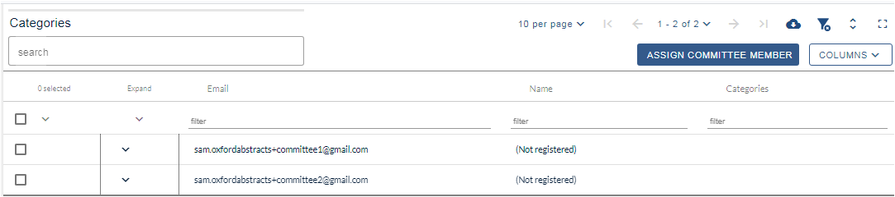
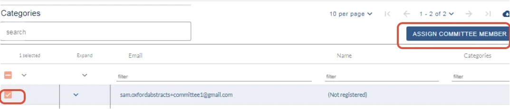
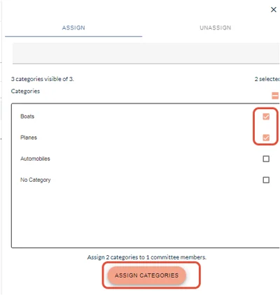
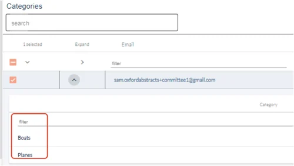
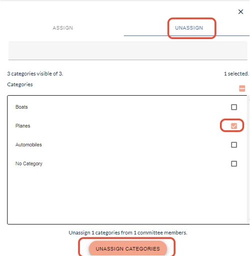
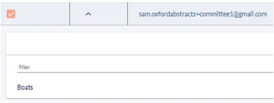

Assigning categories to committee members
For event organisersNot an organiser?
If you need to assign categories to specific committee members, follow the guidance below. This feature is not available in the FREE package.#
Before assigning categories, you will need to add committee members to the system. See Manage users for guidance.
Go to Event dashboard → Advanced → Committee filter
This link will take you to the Assign Categoriestable. The table is formatted in a similar way to all tables in the system (See An overview of tables).

To assigncommittee members, check the box next to the chosen committee member and click the Assign committee memberbutton.

Check the box next to the chosen category (or the top one to select all), then Assign categories.

Close the window to return to the table view. You will see the categories appear in the child rows if you click the arrow in the Show categories column.

To Unassign, repeat as above, but click on the Unassign tab
In the example below, I am unassigning the category Planes from the committee member.
Click Unassign categories, close the window by clicking on the X in the top right hand corner and return to the table.

This change is then reflected in the table

When committee members login, they will only view their assigned categories.

Did this page solve it?
Thanks — this helps us fix it.
Didn't solve it? Ask our support team
No question is too small, and there's no charge for asking. Raise a ticket and someone who knows the software will pick it up.